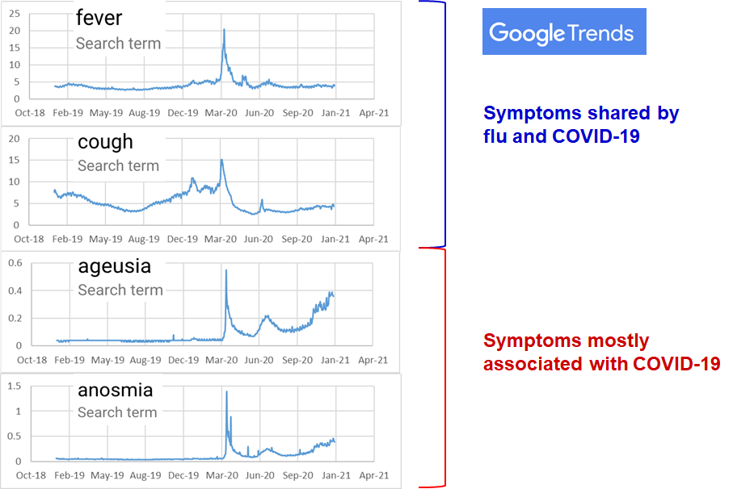
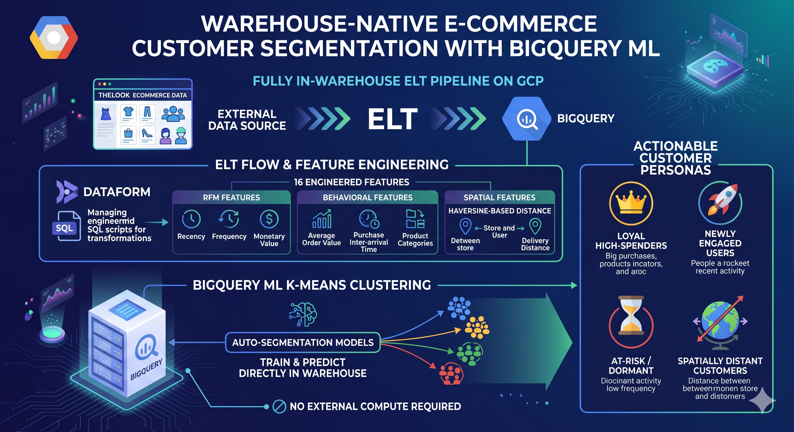
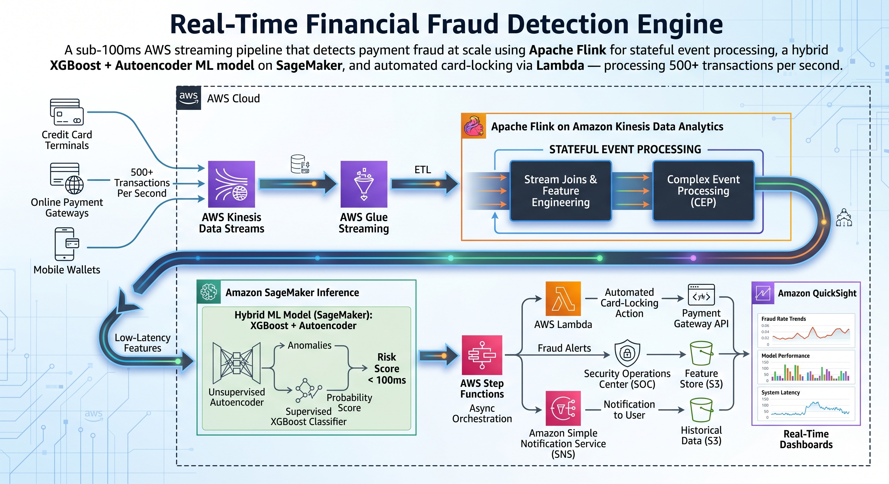
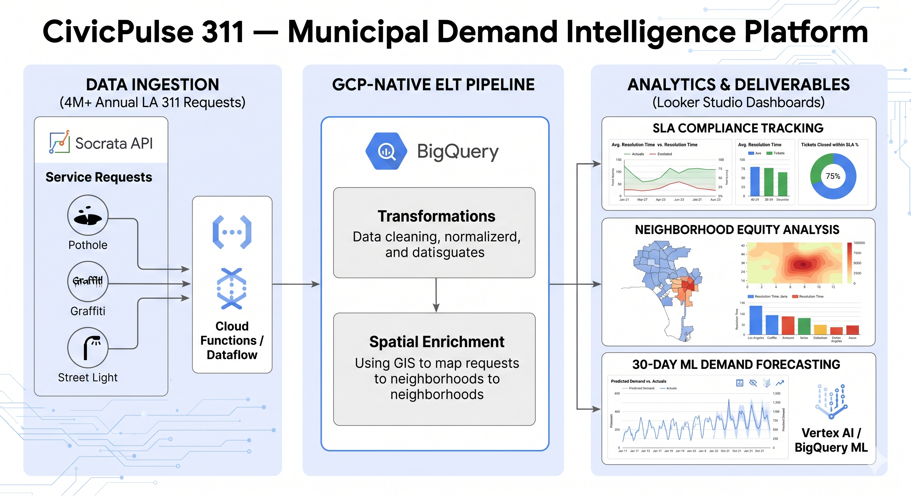
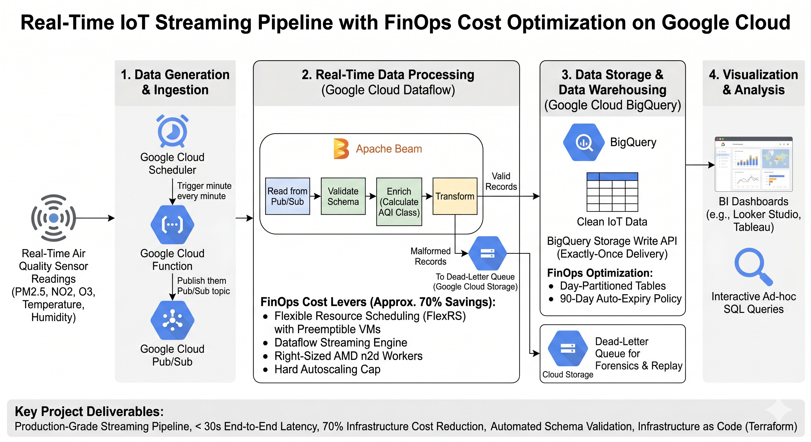
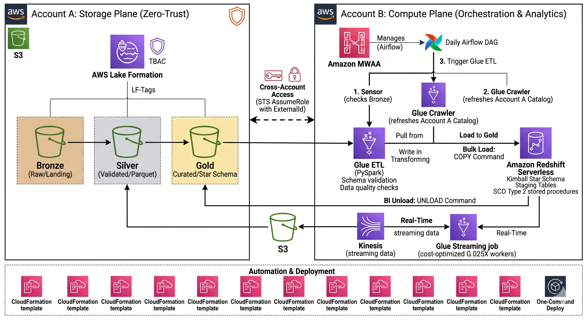
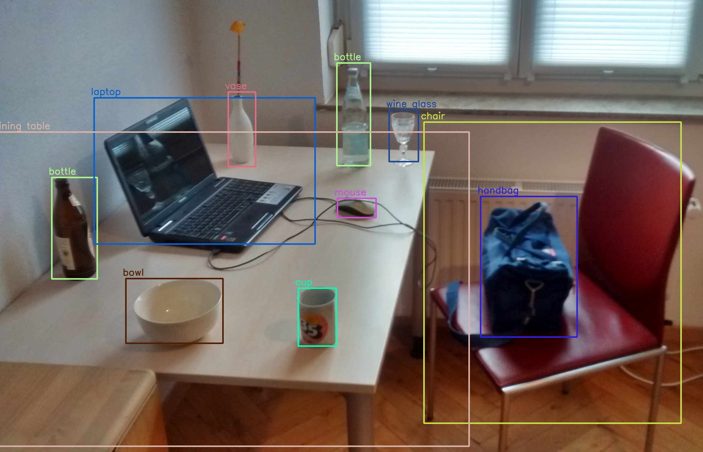

Discriminative Data Analytics
Proposed algorithm can distinguish symtoms unique to COVID-19 (e.g. Shortness of breath, loss of taste) from symptoms shared by COVID-19 and Flu (e.g. Fever, Cough). Analyzing data from successive years using the algorithm can be helpful in making predictions about potential pandemics.

Warehouse-Native E-Commerce Customer Segmentation with BigQuery ML

Built a fully in-warehouse ELT pipeline on GCP using Dataform and BigQuery ML. Engineered 16 RFM, behavioral, and Haversine-based spatial features from TheLook eCommerce data to train a K-Means clustering model that auto-segments customers into actionable personas — no external compute required.
Real-Time Financial Fraud Detection Engine

A sub-100ms AWS streaming pipeline that detects payment fraud at scale using Apache Flink for stateful event processing, a hybrid XGBoost + Autoencoder ML model on SageMaker, and automated card-locking via Lambda — processing 500+ transactions per second.
CivicPulse 311 — Municipal Demand Intelligence Platform

A GCP-native ELT pipeline that ingests 4M+ annual LA 311 service requests via Socrata API, transforms and spatially enriches records in BigQuery, and delivers SLA compliance tracking, neighborhood equity analysis, and 30-day ML demand forecasting through Looker Studio dashboards.
Real-Time IoT Streaming Pipeline with FinOps Cost Optimization on Google Cloud

Real-time GCP streaming pipeline ingesting IoT air quality sensor data end-to-end in under 30 seconds. Cloud Scheduler triggers a Cloud Function → Pub/Sub → Apache Beam on Dataflow → BigQuery with exactly-once delivery. ~70% cost savings via FlexRS, preemptible VMs & Streaming Engine. Full Terraform IaC.
Cross-Account Serverless Data Lake Orchestration on AWS

A production-grade AWS Data Lakehouse that separates storage (Account A) from compute (Account B) using zero-trust cross-account IAM, Glue PySpark ETL, MWAA orchestration, and Redshift Serverless with a Kimball star schema — fully automated via CloudFormation.
Feature Selection using Discriminative Analysis
Using proposed discriminative analysis algorithm, DNA, we can rank features in a dataset and perform feature selection. Using only 1% features, we obtained similar prediction accuracy with shorter convergence time in supervised and unsupervised learning settings.
Custom object recognition project using YOLOR

The trained model is capable of finding objects with excellent accuracy from the list of 10 collected and annotated objects. Mean Average Precision (mAP @ 0.5) of 72.8% after training the model for 500 epochs. Using YOLO-v4 on the same dataset 71.09% of maP @ 0.5 achieved after 500 epochs. Detection time improved 63% using YOLOR compared to YOLO-v4.